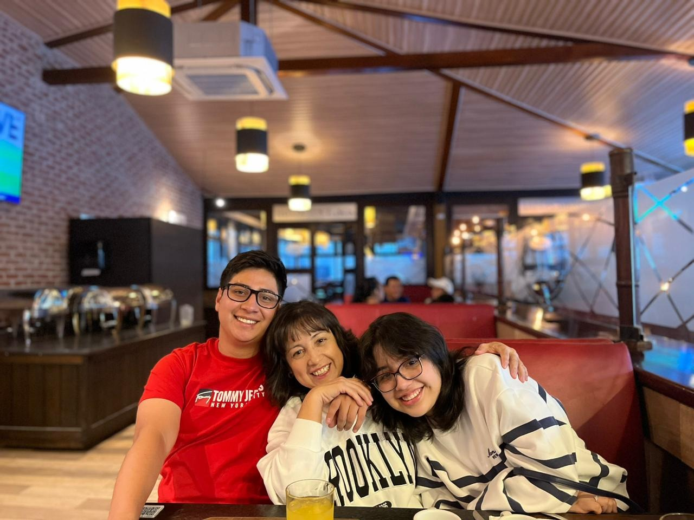

Conclusión
--Sobre el proyecto de vida--
El proyecto de vida nos ayuda y
nos ayudará a enfocarnos de mejo
r manera en nuestro futuro y como
podremos alcanzar las metas que nos proponemos des el principio.
Es fundamental ya que te plantea y observa la realidad sobre el famoso "quién soy" y "a donde voy", brindando respuestas mediante ejercicios y planteamientos que nos den una respuesta segura y concreta.
Académica profesional
Meta cumplida/Corto plazo
Aprender un nuevo lenguaje de programación.
Familiar
Meta cumplida/Corto plazo
Trabajar más la confianza hablando de los problemas del hogar.

Espiritual
Meta cumplida/Corto plazo
Escuchar mas prédicas.
Mental
Meta cumplida/Corto plazo
Exprezarme mejor con las personas.